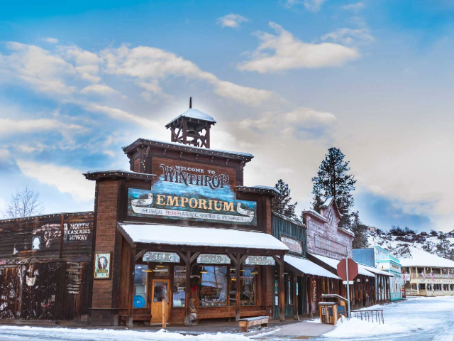
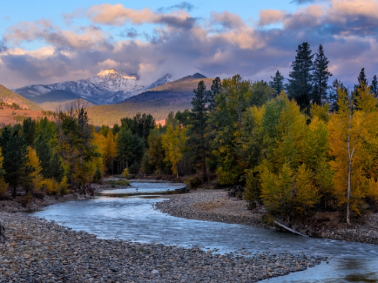
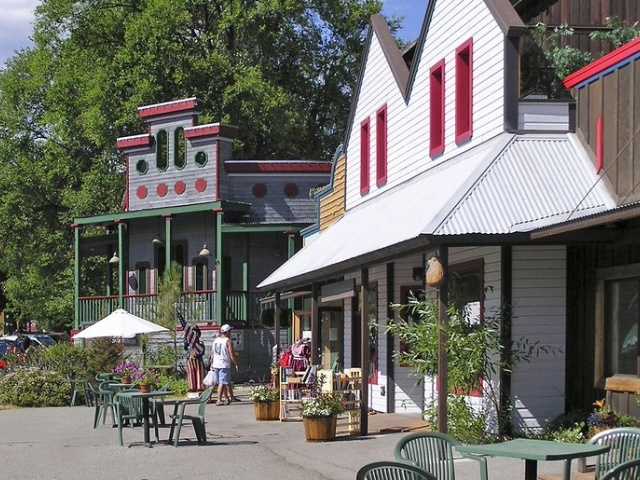
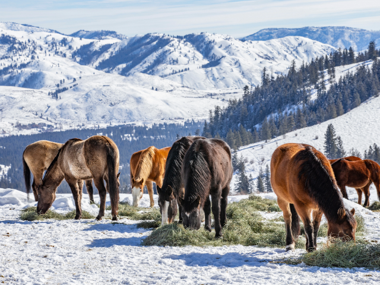
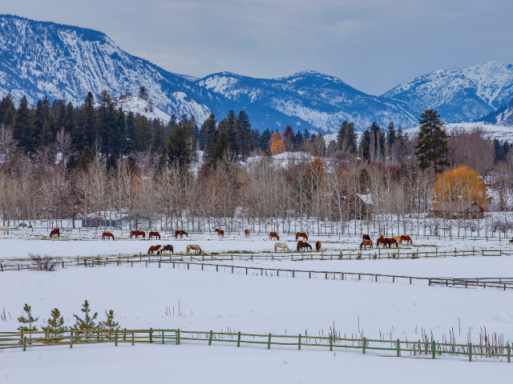
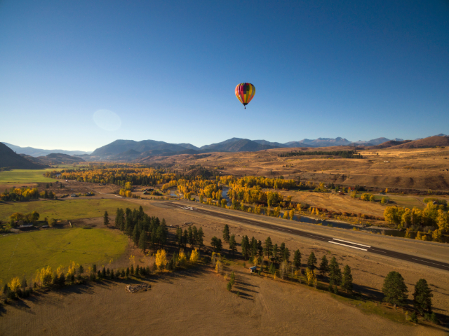
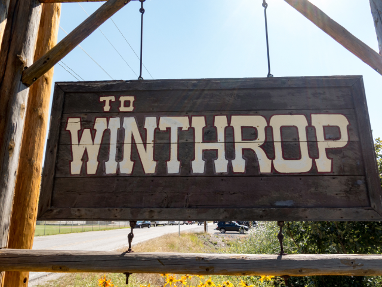
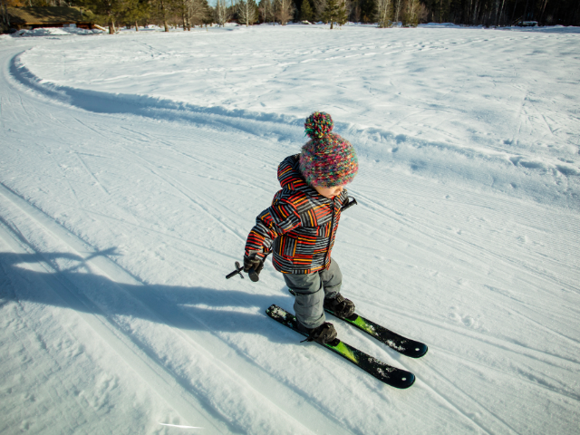
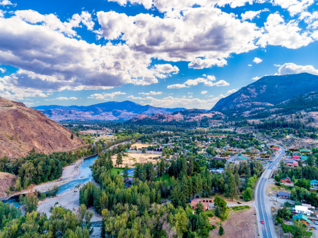

Winthrop is a small town located in the Methow Valley of Okanogan County, in north-central Washington. Known for its Old West-themed downtown and outdoor recreational opportunities, Winthrop was incorporated on March 12, 1924. As of the 2020 census, the town has a population of 401. Classified as a rural area, Winthrop's economy is largely driven by tourism, with activities like hiking, skiing, and mountain biking. The median household income in Winthrop is $53,750, which is below the state median.









Upcoming Events in Winthrop
Winthrop’s Wild West spirit comes alive with these local festivals and outdoor adventures.
| Date | Event | Description |
|---|---|---|
| January 18, 2025 | Snowshoe Softball Tournament | Quirky winter softball games played on snow in the town park. |
| February 15, 2025 | Winthrop Hot Air Balloon Festival | Colorful balloons take flight over the Methow Valley. |
| April 6, 2025 | Sunflower Trail Run | Scenic 5k/10k/half marathon through blooming wildflowers. |
| July 4, 2025 | Old West Parade | Celebrate Independence Day cowboy-style on Main Street. |
| August 16, 2025 | Rhythm & Blues Festival | Live music under the stars along the Methow River. |
| October 5, 2025 | Winthrop Film Festival | Showcasing regional and independent films in a cozy venue. |